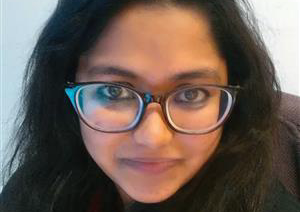

Sharifa Sultana
Faculty Affiliate

I am an Assistant Professor in Computer Science at UIUC. My research is in human-computer interaction (HCI) and human-AI interaction. I connect computing, justice, faith, and access together to support the empowerment of communities worldwide.
Published Work
Ramaravind K. Mothilal, Faisal M. Lalani, Syed Ishtiaque Ahmed, Shion Guha, Sharifa Sultana, ”Talking About the Assumption in the Room.” In Proceedings of the 2025 CHI Conference on Human Factors in Computing Systems (pp. 1-16). (CHI 2025)
Sharifa Sultana, Hafsah Mahzabin Chowdhury, Zinnat Sultana, and Nervo Verdezoto. 2025. “‘Socheton’: A Culturally Appropriate AI Tool to Support Reproductive Well-being.” (DIS 2025)
Alexandra Schofield, Siqi Wu, Theo Bayard de Volo, Tatsuki Kuze, Alfredo Gomez Language, Sharifa Sultana, ““My very subjective human interpretation”: domain expert perspectives on navigating the text analysis loop for topic models”. In Proceedings of the ACM on Human-computer Interaction (GROUP 2025).
Ashratuz Zavin Asha, Sharifa Sultana, Helen Ai He, and Ehud Sharlin, ““Shotitwo First!”: Unraveling Global South Women’s Challenges in Public Transport to Inform Autonomous Vehicle Design.” In Proceedings of the 2024 ACM Designing Interactive Systems Conference (DIS 2024), Copenhagen, DK.
Ashratuz Zavin Asha, Mark Colley, Sharifa Sultana, and Ehud Sharlin, “Introducing AV-Sketch: An Immersive Participatory Design Tool for Automated Vehicle — Passenger Interaction.” In Proceedings of the 16th International Conference on Automotive User Interfaces and Interactive Vehicular Applications (AutomotiveUI 2024), 2024.
Sharifa Sultana, Syed Ishtiaque Ahmed, and Jeffrey M. Rzeszotarski, “Communicating Consequences: Visual Narratives, Abstraction, and Polysemy in Rural Bangladesh.” In Proceedings of the 2023 CHI Conference on Human Factors in Computing Systems. (CHI 2023), Hamburg, Germany.

Relevant Projects
AI repair and maintenance in Global South